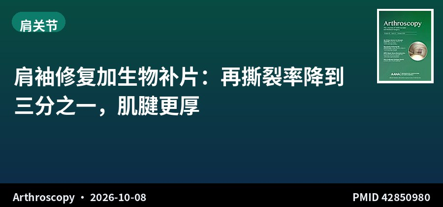

SPORTS MEDICINE & ARTHROSCOPY DIGEST
肩袖加补片，再撕裂率降七成——但 ACL 打 PRP 却没用，差在哪？
第 021 期 · 2026-10-10
10月9日 10 本核心期刊新收录 21 篇 → 精选 14 篇（剔除编辑评论/来信）
上期刚说「给 ACL 重建打 PRP、干细胞没用」，今天就来一篇相反的：给肩袖修复加生物补片，再撕裂率降到三分之一。同样叫「增强」，一个有效一个无效——差别其实不在概念，在载体。
▍今日主打 · TODAY’S FOCUS

系统综述+Meta · I-II级证据 · 9项RCT · 556例 Systematic Review + Meta · Level I-II · 9 RCTs · 556 pts
肩袖修复加生物补片：再撕裂率降到三分之一，肌腱更厚
Biologic Graft Augmentation Is Associated With Lower Retear Rates and Greater Tendon Thickness Compared With Rotator Cuff Repair Without Augmentation
Arthroscopy · 2026-10-08 · 系统综述+Meta · PMID 42850980
一句话结论：9 项 RCT、556 例患者的 Meta 分析（I–II 级证据），比较肩袖修复 ± 生物移植物增强。结果显示：生物移植物增强显著降低再撕裂率（RR 0.31，约降七成），且术后肌腱厚度更大；ASES、Constant、UCLA 评分也见改善。
要点：按 PRISMA 检索 PubMed、Scopus、Embase、Cochrane，纳入比较生物移植物增强 + 标准肩袖修复的 RCT（随访 >1 年），随机效应模型计算均差与 95%CI。
对临床的启示：这一期和上一期主打形成了教科书式的对照：上一期「ACL 重建打 PRP/干细胞没用」，这一期「肩袖修复加生物补片再撕裂率降到三分之一」。差异不在「增强」这个概念，而在载体——肩袖用的是结构性的生物补片（提供力学支架、引导组织长入），ACL 用的是游离的细胞因子（PRP/干细胞）。这提示：单纯的生物学信号可能不够，需要一个能承受载荷、引导再生的结构。临床意义：肩袖修复的补片增强有 I 级证据支持，值得在高再撕裂风险（巨大撕裂、退变重）患者中考虑。局限是仅 9 项 RCT、补片类型与厂家混杂。
Conclusion: A meta-analysis of 9 RCTs (556 patients, Level I–II) compared rotator-cuff repair with vs without biologic graft augmentation. Augmentation significantly reduced retear rates (RR 0.31, ~70% lower) with greater tendon thickness, plus improved ASES, Constant and UCLA scores.
Key points: PRISMA search of PubMed/Scopus/Embase/Cochrane for RCTs comparing biologic graft augmentation plus standard cuff repair (follow-up >1 y); random-effects models for mean differences.
Clinical implications: This issue and the last form a textbook contrast: last time 'PRP/stem cells fail in ACL,' this time 'biologic graft augmentation cuts cuff retears to one-third.' The difference is not the concept of augmentation but the carrier—cuff augmentation uses a structural patch (mechanical scaffold guiding ingrowth), while ACL used free cytokines (PRP/stem cells). This suggests biologic signaling alone may be insufficient without a load-bearing, regenerative structure. Clinical meaning: cuff augmentation has Level-I support and is worth considering in high-retear-risk patients (massive/degenerate tears). Limitations: only 9 RCTs, mixed patch types.
原文 / Source：doi.org/10.1002/arj.70619
▍其余 13 篇 · 一屏看完
膝关节
LET 不改变儿科 ACLR 后早期步态生物力学
Lateral Extra-Articular Tenodesis Does Not Alter Early Gait Biomechanics After ACLR in a Pediatric Population
Am J Sports Med · PMID 42852835
摘要：儿科（≤18 岁）ACLR+LET 与单纯 ACLR 的步态三维运动学比较：LET 不改变术后早期步态生物力学，未出现先前担心的「外侧间室过度约束、内旋减少、外翻增加」。
In pediatric ACLR, LET did not alter early gait biomechanics versus isolated ACLR—no evidence of the feared lateral overconstraint, reduced internal rotation or increased valgus.
膝关节
心理准备度可预测青少年髌骨稳定术后重返运动
Can Psychological Readiness Predict Return to Sports After Patellar Stabilization Surgery in Adolescents?
Am J Sports Med · PMID 42852817
摘要：青少年（10–19 岁）髌骨稳定术后，ACL-RSI 心理准备度评分更高者重返运动概率更大——心理维度同样适用于髌股不稳。
In adolescents after patellar stabilization, higher ACL-RSI psychological-readiness scores predicted greater likelihood of return to sport.
膝关节
股四头肌腱 ACL：早期 LSI 与 2 年结局相关
Association Between Early Limb Symmetry Index Scores and 2-Year Outcomes After Quadriceps Tendon Autograft ACLR
Am J Sports Med · PMID 42852663
摘要：股四头肌腱自体 ACLR 后，3/6/9 个月的肢体对称指数（LSI）与 2 年 PROs 相关，9 个月股四头肌 LSI 越高，IKDC/Lysholm 越好，并给出 PASS 阈值。
After QT-ACLR, early (3/6/9-mo) limb symmetry index correlated with 2-year PROMs; higher 9-mo quadriceps LSI predicted better IKDC/Lysholm, with PASS thresholds defined.
膝关节
Sonnery-Cottet 术式：胫骨 ALL 无创过线技巧
A Simple and Atraumatic Loop-Passing Technique for Tibial ALL Graft Passage
Arthrosc Tech · PMID 42852393
摘要：技术说明：用推结器 + 0 号丝线完成胫骨 ALL 移植物在两个汇聚隧道间的无创过线，替代盲穿的针挂编织线，降低皮质穿破与骨外走行风险。
A knot-pusher-assisted 0-silk loop technique for atraumatic tibial ALL graft passage between converging tunnels, avoiding blind needle passage and reducing cortical breach.
膝关节
股骨滑车骨软骨缺损：全关节镜支架植入
All-Arthroscopic Trochlear Osteochondral Scaffold Matrix Implantation
Arthrosc Tech · PMID 42852391
摘要：技术说明：将文石基骨软骨支架从微创小切口改为全关节镜植入滑车，强调入路规划、垂直骨床准备、注射器递送与齐平压配固定。
Technical note on converting aragonite-based osteochondral scaffold implantation in the trochlea to an all-arthroscopic technique—portal planning, perpendicular socket prep, syringe delivery, recessed press-fit.
膝关节
椭圆股骨隧道：更贴合 ACL 足印区的解剖重建
Application of the Oval Femoral Tunnel Technique in Anatomical Single-Bundle ACLR
Arthrosc Tech · PMID 42852099
摘要：技术说明（福建协和术式）：椭圆股骨隧道扩张器打造的椭圆隧道更贴合 ACL 足印区，改善旋转稳定与移植物整合。
Technical note (Fujian Union technique) on an oval femoral tunnel that better matches the ACL footprint, improving rotational stability and graft integration.
踝足
第一跖趾融合：术后立即可负重 vs 不负重（RCT）
To Walk or Not? A Randomised Controlled Trial of Weightbearing After First MTP Fusion
Foot Ankle Int · PMID 42852924
摘要：68 例第一跖趾关节融合 RCT，立即可负重（WBAT）与不负重（NWB）方案在 VAS、FAAM 结局上对比，为负重方案选择提供直接证据。
In a 68-patient RCT of first-MTP fusion, immediate weightbearing-as-tolerated versus non-weightbearing protocols were compared on VAS and FAAM outcomes.
踝足
踝骨折 ORIF：MAC 局部浸润 vs 全麻
General Anesthesia vs MAC With Local Anesthetic Infiltration for Ankle Fracture ORIF
Foot Ankle Int · PMID 42852940
摘要：159 例门诊踝骨折 ORIF，高容量低浓度局麻浸润 + 监护麻醉（MAC-VL）与全麻对比，评估恢复指标与安全性。
In 159 outpatient ankle ORIFs, high-volume low-concentration local infiltration with MAC (MAC-VL) was compared against general anesthesia for recovery and safety.
踝足
第一跖趾融合后跖痛：内镜部分籽骨切除
Endoscopic Plantar Partial Sesamoidectomy After First MTP Arthrodesis
Arthrosc Tech · PMID 42852111
摘要：技术说明：全内镜下经跖侧行部分籽骨切除，治疗第一跖趾融合后的第一跖骨头跖痛，比关节镜入路更直接，可术中滴定切除量。
Technical note on all-endoscopic plantar partial sesamoidectomy for post-arthrodesis metatarsalgia—a more direct approach, with titratable resection.
髋关节
60 岁以上髋关节镜：短期改善但转 THA 率不一
Hip Arthroscopy in Patients Aged ≥60 Years: Short-Term Improvement but Variable THA Conversion
Arthroscopy · PMID 42850952
摘要：7 项研究、199 例（204 髋）≥60 岁 FAIS 髋关节镜系统综述：短期 PROs 改善，但转全髋置换率差异大，年龄与术前退变是关键变量。
Across 7 studies (199 patients, ≥60 y), hip arthroscopy improved short-term PROs but THA conversion varied widely—age and preop degeneration were key.
肩关节
AI 影像检测肩袖撕裂：准确率高，还能预测结局
AI Models Based on Medical Imaging Achieve Accurate Detection of Rotator Cuff Tear and Initial Outcome Prediction
Arthroscopy · PMID 42852970
摘要：37 项研究、46,593 例的系统综述：AI 在影像上检测肩袖撕裂的准确率可与医师媲美，并对术后结局有初步预测能力。
Across 37 studies (46,593 patients), AI matched physicians in detecting rotator-cuff tears on imaging and showed initial capability to predict postoperative outcomes.
其他
腕关节镜 Wafer 术治特发性尺骨撞击：5 年随访有效
The Arthroscopic Wafer Procedure Provides Successful Midterm Outcomes for Idiopathic Ulnar Impaction
Arthroscopy · PMID 42852997
摘要：40 例特发性尺骨撞击（尺骨正变异 <4mm）腕关节镜 Wafer 术，平均 73.3 个月随访：VAS 5.5→1.7、Mayo 腕评分 51.9→86.5，临床显著改善。
In 40 cases of idiopathic ulnar impaction (73.3-mo follow-up), arthroscopic wafer improved VAS 5.5→1.7 and Mayo Wrist Score 51.9→86.5.
运动防护
精英男足运动员无症状腰椎间盘改变
Lumbar Disc Changes on MRI in Asymptomatic Elite Male Soccer Players
Sports Health · PMID 42852647
摘要：43 名精英男足运动员入队 MRI：无症状腰椎间盘突出较常见，且突出负荷与缺训天数未必相关——别把「影像异常」等同于「病因」。
In 43 elite male soccer players, asymptomatic lumbar disc herniation was common and not necessarily linked to missed training—don't equate imaging abnormalities with symptoms.
💬 一起聊聊：你给肩袖修复常规加补片吗？什么情况（巨大撕裂？翻修？）你会考虑？评论区聊聊。
关于本栏目：每日定时检索 10 本运动医学核心期刊前一日新收录文献，每日聚焦 1 篇值得深读的 + 其余精简速览，AI 辅助生成中英双语精要。
声明：本内容由 AI 辅助整理，仅供学术交流参考，观点与数据请以原文为准，不构成诊疗建议。文献题录与摘要来源：PubMed。
— 运动医学 · 关节镜文献速览 · 第 021 期 —